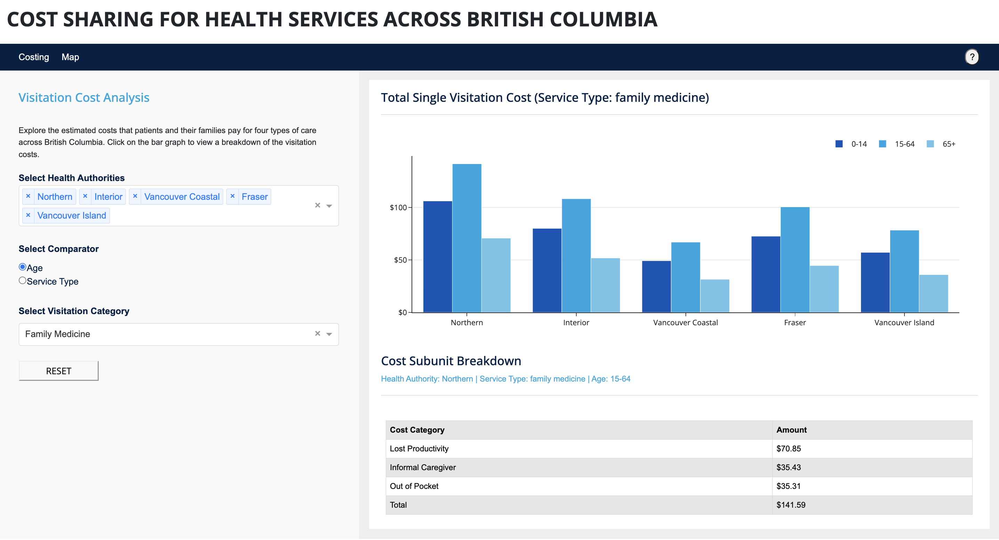

RTVS
June 2023 / Developer
Technologies: Python, Pandas, Plotly, Dash, Google Cloud Platform, Containerization
Company: UBC Digital Emergenct Medicine

The Problem
Rural patients in British Columbia face significant opportunity costs when accessing emergency care—including travel expenses, childcare needs, lost wages, and emotional strain—which disproportionately affect remote, Indigenous, and multicultural communities. These burdens, often accepted as unavoidable, create systemic inequities in health access and outcomes. A data-driven tool was needed to quantify and visualize these costs across the province’s five health authorities, making inequities visible to inform resource allocation and support the development of targeted interventions like the Real-Time Virtual Support (RTVS) program.
RTVS Snippet
